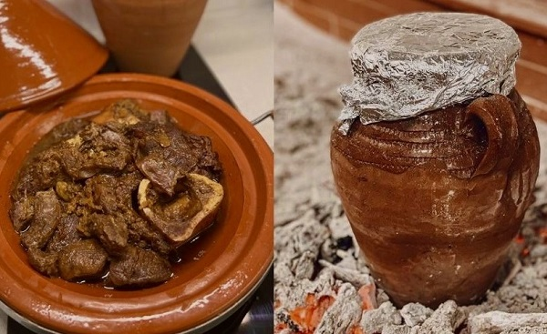
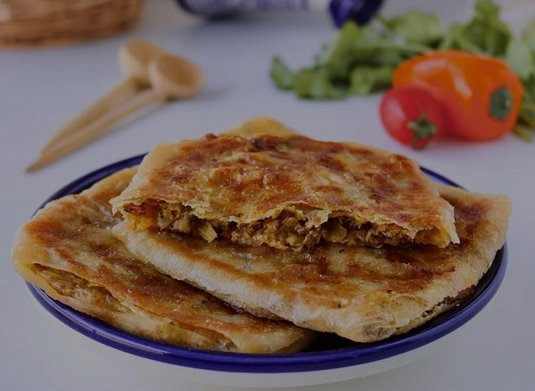
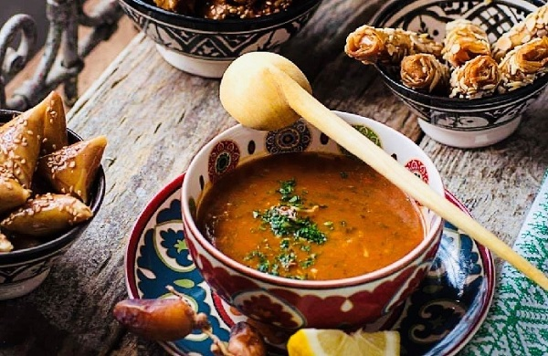

Découvrire les plats Emblématique du Haut Atlas du Maroc
Marrakech : Une cuisine riche en saveurs traditionnelles
Tanjia Marrakchia
La tanjia est un plat emblématique de Marrakech, préparé avec soin et patience. Elle se compose de morceaux tendres de viande, généralement de l’agneau ou du bœuf, marinés avec un mélange d'épices typiques comme le cumin, le gingembre, la cannelle, le curcuma et le safran. On y ajoute de l’ail, des lamelles de citron confit, et une touche de smen (beurre rance) pour rehausser les saveurs. La préparation est ensuite placée dans une jarre en terre cuite fermée, qui est déposée dans les cendres des fours de hammam. Ce mode de cuisson lente, pendant plusieurs heures, donne une viande incroyablement fondante et parfumée, offrant une explosion de saveurs en bouche. Ce plat, traditionnellement associé aux célibataires, est aujourd'hui un incontournable des fêtes et des repas entre amis.
Msemen Farci
Le msemen, une galette feuilletée originaire du Maroc, devient un mets de choix à Marrakech lorsquil est farci. La pâte est préparée avec de la farine, de la semoule fine, de l’eau, du sel, et un filet d’huile pour obtenir une texture souple. Une fois étalée, la galette est remplie d’une farce généreuse à base de viande hachée, d’oignons finement coupés, de coriandre, de persil et dépices comme le paprika et le poivre. Après avoir été repliée en carrés, la galette est cuite sur une plaque chaude jusqu’à ce qu’elle soit croustillante à l’extérieur et moelleuse à l’intérieur. Ce plat, souvent consommé au petit- déjeuner ou en collation, est à la fois gourmand et nourrissant, parfait avec un thé à la menthe.
Harira Marrakchia
Bien que la harira soit consommée dans tout le Maroc, la version marrakchie possède des caractéristiques uniques. Elle est cuisinée avec une base de tomates fraîches réduites en purée, enrichie de pois chiches, de lentilles et parfois de petites pâtes en forme de vermicelles. Le bouillon est aromatisé avec un mélange d'épices, incluant le curcuma, le poivre noir et le gingembre, ainsi que des herbes fraîches comme la coriandre et le persil. On y ajoute parfois des morceaux de viande pour renforcer sa richesse. Liée avec un mélange de farine et d’eau (appelé "tedouira").
Cette soupe a une texture onctueuse et réconfortante. Traditionnellement consommée pendant le Ramadan pour rompre le jeûne, elle est également populaire en hiver pour sa capacité à réchauffer le corps et l'esprit.
Explorez la diversité des saveurs dans autres villes du Maroc
Tanger, Fez, Oujda, Ouarzazate et Laayoune
Bon voyage à travers les saveurs du Maroc !